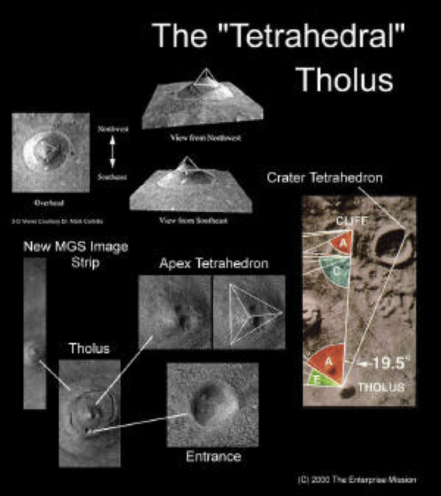
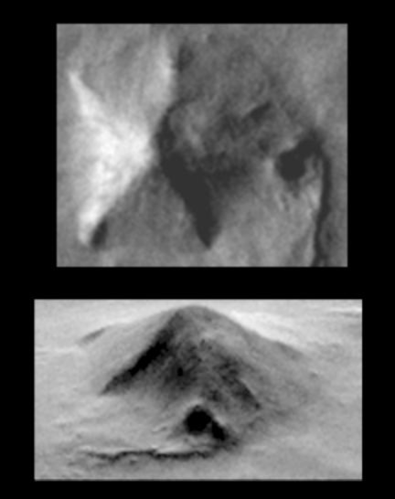
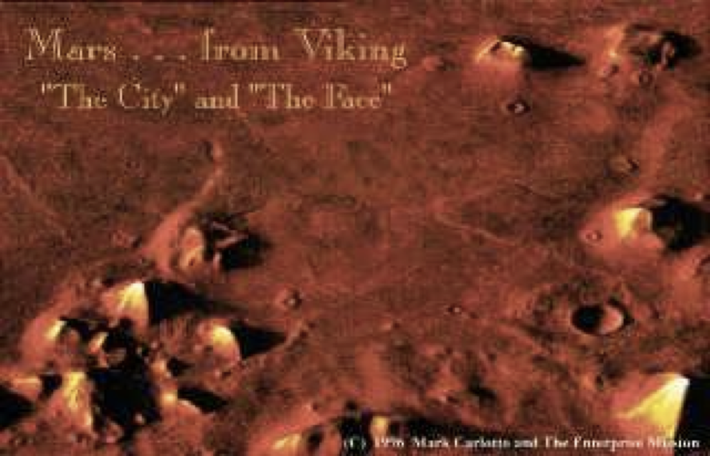
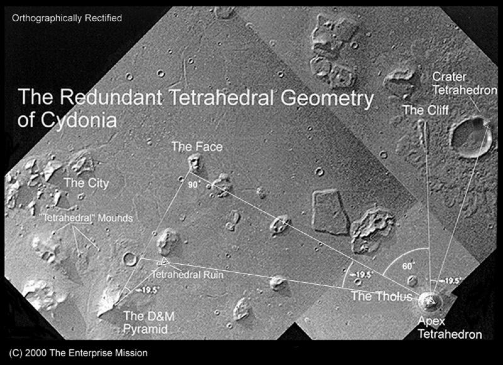
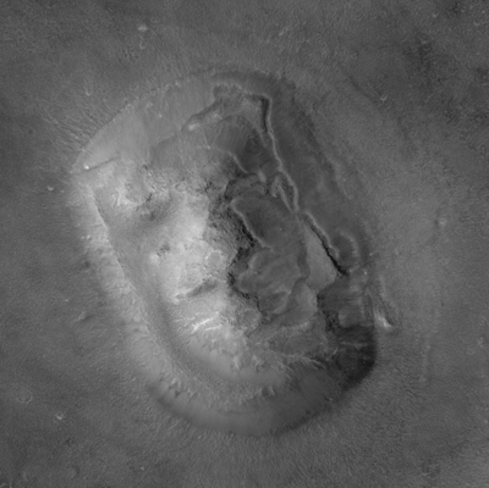

What are the Martian coordinates doing in formulas of Great Pyramid? Was it as if the creators of the
Pyramids of Giza knew about Great Pyramid of Mars? And no, that's not a joke. When the Viking spacecraft
first transmitted images of this area of Mars, scientists Richard Hoagland and Erol Torul
determined the exact coordinates of this place, where this pyramid is set 1.6 miles long. As
a result, it received the name D&M. Hoagland and Torul came to the conclusion that this object was
created artificially. If artificial, then who created it? There's nobody home on Mars right now,
at least that's what NASA tells us. The first thought that comes to mind is that if it is an artificial
pyramid and has a height of 3,500 feet, can it mean the Zero Meridian of Mars, following the example of
our Great Pyramid? The latitude of D&M passes through the Martian
equator, but its longitude does not correspond to the matrix, but it is still the Zero Meridian.
In addition, Zero Meridian indicated by astronomers is not substantiated by anything significant, as in
principle, our Greenwich. Therefore, we propose to take the coordinates of the D&M pyramid as the
Zero Meridian, at least for further calculations. About ten miles northeast of the pyramid, there is another formation called the Face, which attracts the attention of scientists and enthusiasts from around the world (terrestrial of course). The game of light and shadow is the position of official science.
However, Richard Hoagland, based on the calculations of Erol Torul, calculated the angles of the Pyramid, which turned out to be a tetrahedron. Tetrahedron - a pyramid with three planes and in Hogland's calculations he explained the importance of the tetrahedron in spherical mathematics. If we place a tetrahedron in a sphere, its base will pass through a line about 19.5 degrees north or south of the equator. And surprisingly, at these latitudes, between 19.5 to the south and 19.5 to the north are the largest energy flows on the planets of the solar system. For example, the red spot on Jupiter, in fact nothing more than a giant storm moving at latitude 19.5 degrees north of the equator, the largest volcanoes on Earth are also located at latitude 19.5 degrees north of the equator. The largest volcano on Mars, Olympus, is located in the same way. Natural energy flows will be directed to these latitudes passing through the astronomical bodies of the solar system. Most of the pyramids of South America are located the same way. Each side of the tetrahedron contains 3 360 degree angles. All three planes will give a total of 720 degrees. In the language of the matrix, the tetrahedron is 720.
And guess what's there? Face width. And if nature itself created this object, so similar to the face on Mars from a double PI and a tetrahedron, then it should build the Great Pyramid on Earth. The latitude coordinate of the face of Sydonia and the square root of 2160. And it turns out that the Face knows the diameter of Stonehenge . Is it possible to see Stonehenge on Earth from the Face of Mars? And in general, what Matrix artifacts can be seen from Mars?
Let's arrange PI and its fractions by vectors, then 1/3 PI will correspond to the Mound of Monks in Cahokia, 2\3 PI will correspond to the Shark Mound in Bermuda, and PI, respectively, to the Great Pyramid. Theoretically, they can be seen from space at the same time.
If we calculate this distance to the east of the Zero Meridian indicated by the pyramid D&M, we will suddenly find the longitude of the Face. However, we have not yet fully figured out the plans of the Face. Let's remember the tangents, basically when we raised the values to 9 degrees. What happens if we do this with the Longitude coordinate of the Face?
Isn't it surprising that the minimum distance between Mars and Earth is 35 million miles? If so continue then the forces of nature also know what a mile is. By a similar logic to the D&M pyramid, the face vector is 656.5612703 The precession of the equinox is one of the largest known astronomical constants. Mars is the 5th astronomical body from the Sun, it is the 5th in the language of the Matrix. And again the value of Cuicuilco,the area of the circle. These two artifacts are placed very wisely, there is very little chance that they will be dismantled to make a road, as happened in Giza. How many more matches do we need to make sure the Matrix exists? Now is the time to look at the Earth to see what the Martian Face says to the Earth. Remember that the face of the Sphinx looks at an azimuth of 30 PI and when we divide 5400 by 30 PI we get the exact value of the radian, let's see how a face a mile long from Mars looks at a face a mile long on Earth. The face in Sydonia also has an azimuth, it is exactly 90 degrees.
Radian is the basic unit of the matrix. What result can we summon? This is a formula based on basic astronomical constants. CyFV - vector Face of Sydonia, DMV - vector of the pyramid D&M, GPV - vector of the Great Pyramid. How do we live with the idea that it's not about artificial artifacts on Mars, they're where they should be and are related to our artifacts, whether we like it or not, so call them whatever you want. It is gratifying that we will not be able to bring them to Earth, transportation will be very expensive. In addition, if we ever plan to destroy our Great Pyramid, all its dimensions will remain in the cloud. We are accustomed, from childhood we are told that the pyramids of Giza, the Mayan pyramids, Stonehenge will be built at different times by separate civilizations that did not even know about each other. However, we must get used to the fact that the Face on Mars and the Great Pyramid and Stonehenge, Tikal, Kalamkul, Teotiouacan and other artifacts are the heritage of one great civilization, the wisdom and knowledge of which we can now comprehend. It is a gift that has survived the dark pages of human history.